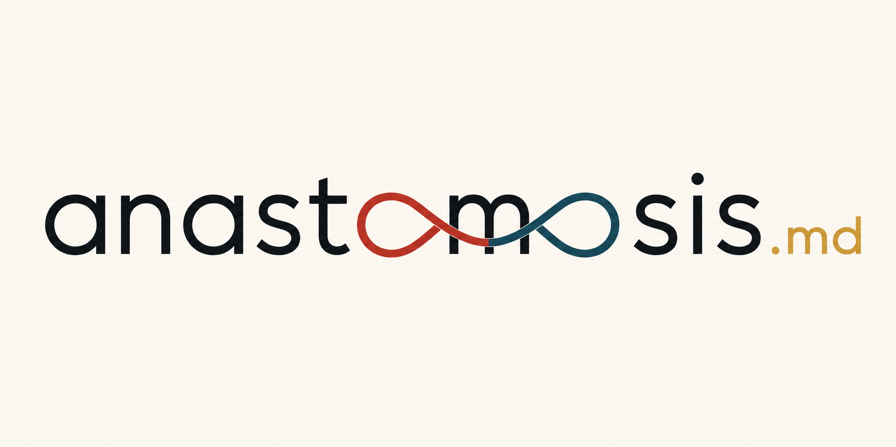
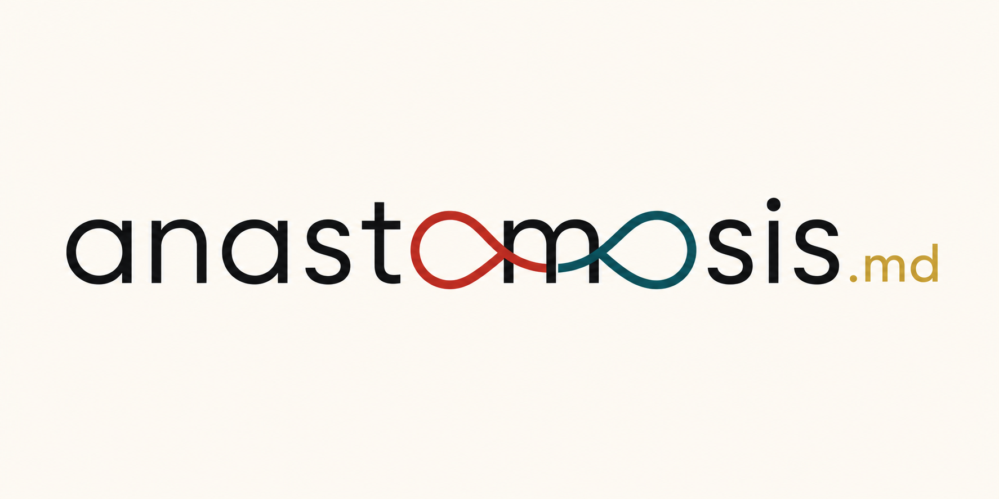
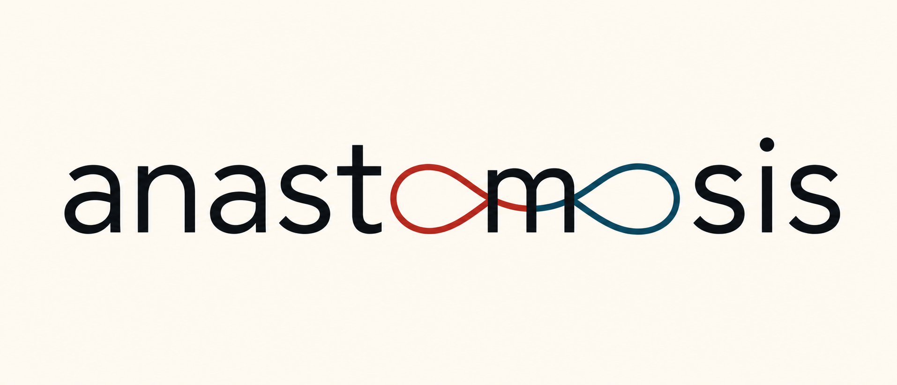
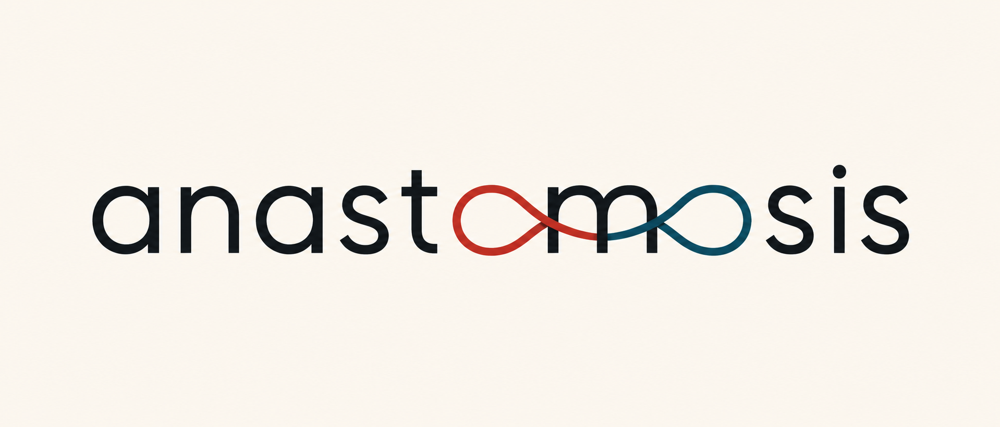

Anastomosis.MD · Logo lab · The verified round
O-loops, take three — machine-checked this time
Your design logic. Our spelling gate. Four survivors.
The design follows your instruction exactly: the infinity's first half is the first o, the second half is the second o, and the m lives subtly at the junction between them — the crossing line weaving through the m's open counters. Every candidate was then read by OCR before reaching this page: misspelled or garbled designs were discarded automatically. Only verified survivors are shown.
10candidates generated
4passed the gate
6discarded — receipts below
The discards (what the machine caught):
wm-4c1 "anast tomosis" · wm-4c2 "anaste cmoosis" · wm-4c3 "anastmosis" · wm-4c4 "sis anast" · wm-4c6 "anastcmosis" · wm-3c2 "osis xo anast mx" — every one of these would have been another misspelling in front of your eyes. Not this time.
Finalist 1 · with .md
wm-4c5

OCR: "anastomosis .md" ✓
The crossing line weaves through the m's two open counters — passing between its three stems without touching them.
anastomosis.md
1,822 cases · 26 systems
Finalist 2 · with .md
wm-4c7

OCR: "anastomosis… .md" ✓ (check the .md area with your eyes — a stray read nearby)
Same weave mechanic, different rendering pass.
anastomosis.md
1,822 cases · 26 systems
Finalist 3 · no .md
wm-3c1

OCR: "anastomosis" ✓
The weave mechanic, clean suffix-free rendering.
anastomosis.md
1,822 cases · 26 systems
Finalist 4 · no .md
wm-3c3

OCR: "anastomosis" ✓
Same weave, another pass — font weight and loop curve differ slightly.
anastomosis.md
1,822 cases · 26 systems